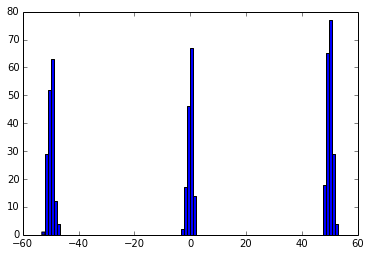

In [3]:
Multinomial?
In [5]:
Categorical?Categorical?
In [14]:
pm.step_methods.ElemwiseCategoricalStep?pm.step_methods.ElemwiseCategoricalStep?
In [1]:
%pylab --no-import-all inline
Populating the interactive namespace from numpy and matplotlib
In [50]:
hist(data, bins=100);hist(data, bins=100);

In [65]:
Multinomial?Multinomial?
In [21]:
tr[category][-1]
Out[21]:
array([0, 0, 2, 2, 1, 0, 1, 0, 1, 0, 0, 0, 0, 0, 2, 0, 1, 1, 2, 0, 0, 2, 1,
2, 0, 0, 2, 2, 2, 1, 1, 2, 1, 2, 2, 0, 0, 2, 1, 1, 1, 2, 0, 0, 1, 1,
2, 1, 2, 2, 1, 0, 2, 0, 2, 2, 1, 1, 2, 1, 0, 0, 1, 2, 2, 2, 0, 0, 0,
2, 0, 1, 2, 1, 2, 1, 1, 2, 0, 0, 0, 0, 2, 0, 0, 0, 2, 1, 1, 2, 2, 2,
1, 1, 2, 0, 1, 0, 1, 1, 1, 0, 2, 2, 1, 1, 0, 1, 0, 2, 2, 2, 1, 1, 2,
2, 0, 1, 1, 0, 0, 2, 2, 1, 2, 2, 1, 1, 1, 2, 2, 0, 1, 2, 0, 2, 2, 0,
0, 2, 1, 1, 1, 2, 0, 0, 2, 0, 0, 0, 0, 2, 1, 0, 1, 2, 2, 1, 0, 0, 1,
0, 1, 2, 2, 1, 0, 1, 1, 2, 0, 0, 2, 1, 0, 0, 2, 2, 1, 2, 1, 0, 2, 1,
2, 0, 0, 2, 0, 0, 2, 2, 0, 2, 1, 2, 1, 1, 1, 2, 1, 2, 1, 2, 1, 1, 0,
0, 2, 1, 0, 0, 1, 0, 0, 0, 2, 1, 2, 2, 1, 2, 1, 1, 1, 0, 1, 1, 0, 0,
1, 1, 0, 0, 0, 2, 0, 2, 2, 2, 2, 2, 2, 1, 0, 0, 1, 0, 2, 0, 2, 0, 1,
0, 0, 2, 1, 1, 0, 0, 2, 0, 2, 2, 1, 2, 1, 2, 0, 0, 0, 2, 2, 1, 2, 1,
1, 2, 0, 0, 2, 0, 0, 0, 0, 2, 0, 1, 2, 1, 0, 0, 2, 0, 1, 2, 0, 2, 2,
1, 1, 0, 2, 2, 1, 0, 2, 0, 2, 1, 0, 2, 0, 2, 2, 2, 0, 2, 0, 0, 2, 0,
1, 1, 2, 2, 0, 0, 2, 0, 2, 0, 0, 1, 1, 1, 0, 2, 2, 0, 1, 0, 0, 1, 0,
2, 0, 1, 2, 1, 0, 0, 1, 1, 1, 2, 1, 1, 0, 2, 2, 2, 2, 2, 1, 1, 0, 0,
1, 2, 2, 1, 0, 1, 0, 2, 1, 1, 1, 2, 1, 0, 1, 2, 0, 1, 0, 1, 0, 0, 0,
1, 0, 2, 1, 1, 2, 1, 0, 2, 2, 1, 0, 2, 0, 1, 0, 2, 1, 1, 0, 1, 0, 0,
0, 0, 2, 2, 0, 1, 2, 1, 1, 1, 2, 1, 0, 2, 2, 1, 2, 2, 0, 0, 1, 0, 1,
2, 1, 0, 2, 1, 1, 0, 1, 2, 0, 2, 1, 1, 1, 2, 1, 1, 2, 0, 1, 0, 0, 0,
2, 2, 2, 0, 1, 0, 0, 1, 1, 1, 0, 0, 0, 2, 0, 1, 0, 1, 1, 0, 2, 1, 2,
0, 0, 0, 0, 2, 2, 0, 0, 1, 0, 0, 0, 1, 0, 2, 2, 1], dtype=int64)
In [19]:
v
Out[19]:
array([1, 1, 0, 0, 2, 1, 2, 1, 2, 1, 1, 1, 1, 1, 0, 1, 2, 2, 0, 1, 1, 0, 2,
0, 1, 1, 0, 0, 0, 2, 2, 0, 2, 0, 0, 1, 1, 0, 2, 2, 2, 0, 1, 1, 2, 2,
0, 2, 0, 0, 2, 1, 0, 1, 0, 0, 2, 2, 0, 2, 1, 1, 2, 0, 0, 0, 1, 1, 1,
0, 1, 2, 0, 2, 0, 2, 2, 0, 1, 1, 1, 1, 0, 1, 1, 1, 0, 2, 2, 0, 0, 0,
2, 2, 0, 1, 2, 1, 2, 2, 2, 1, 0, 0, 2, 2, 1, 2, 1, 0, 0, 0, 2, 2, 0,
0, 1, 2, 2, 1, 1, 0, 0, 2, 0, 0, 2, 2, 2, 0, 0, 1, 2, 0, 1, 0, 0, 1,
1, 0, 2, 2, 2, 0, 1, 1, 0, 1, 1, 1, 1, 0, 2, 1, 2, 0, 0, 2, 1, 1, 2,
1, 2, 0, 0, 2, 1, 2, 2, 0, 1, 1, 0, 2, 1, 1, 0, 0, 2, 0, 2, 1, 0, 2,
0, 1, 1, 0, 1, 1, 0, 0, 1, 0, 2, 0, 2, 2, 2, 0, 2, 0, 2, 0, 2, 2, 1,
1, 0, 2, 1, 1, 2, 1, 1, 1, 0, 2, 0, 0, 2, 0, 2, 2, 2, 1, 2, 2, 1, 1,
2, 2, 1, 1, 1, 0, 1, 0, 0, 0, 0, 0, 0, 2, 1, 1, 2, 1, 0, 1, 0, 1, 2,
1, 1, 0, 2, 2, 1, 1, 0, 1, 0, 0, 2, 0, 2, 0, 1, 1, 1, 0, 0, 2, 0, 2,
2, 0, 1, 1, 0, 1, 1, 1, 1, 0, 1, 2, 0, 2, 1, 1, 0, 1, 2, 0, 1, 0, 0,
2, 2, 1, 0, 0, 2, 1, 0, 1, 0, 2, 1, 0, 1, 0, 0, 0, 1, 0, 1, 1, 0, 1,
2, 2, 0, 0, 1, 1, 0, 1, 0, 1, 1, 2, 2, 2, 1, 0, 0, 1, 2, 1, 1, 2, 1,
0, 1, 2, 0, 2, 1, 1, 2, 2, 2, 0, 2, 2, 1, 0, 0, 0, 0, 0, 2, 2, 1, 1,
2, 0, 0, 2, 1, 2, 1, 0, 2, 2, 2, 0, 2, 1, 2, 0, 1, 2, 1, 2, 1, 1, 1,
2, 1, 0, 2, 2, 0, 2, 1, 0, 0, 2, 1, 0, 1, 2, 1, 0, 2, 2, 1, 2, 1, 1,
1, 1, 0, 0, 1, 2, 0, 2, 2, 2, 0, 2, 1, 0, 0, 2, 0, 0, 1, 1, 2, 1, 2,
0, 2, 1, 0, 2, 2, 1, 2, 0, 1, 0, 2, 2, 2, 0, 2, 2, 0, 1, 2, 1, 1, 1,
0, 0, 0, 1, 2, 1, 1, 2, 2, 2, 1, 1, 1, 0, 1, 2, 1, 2, 2, 1, 0, 2, 0,
1, 1, 1, 1, 0, 0, 1, 1, 2, 1, 1, 1, 2, 1, 0, 0, 2])
In [3]:
model.free_RVsmodel.free_RVs
Out[3]:
[dd, precs, means, category]
In [1]:
import numpy as np
import pymc3 as pm
from pymc3 import Model, Gamma, Normal, Dirichlet
from pymc3 import Categorical
from pymc3 import sample, Metropolis, ElemwiseCategoricalStep
k = 3
ndata = 500
v = np.random.randint(0, k, ndata)
data = ((v == 0)*(50 + np.random.randn(ndata))
+ (v == 1)*(-50 + np.random.randn(ndata))
+ (v == 2)*np.random.randn(ndata))
with Model() as model:
dd = Dirichlet('dd', a=np.array([1., 1., 1.]), shape=k)
sd = pm.Uniform('sd', lower=0, upper=20, shape=k)
means = Normal('means', [-50, 0, 50], sd=15, shape=k)
category = Categorical('category',
p=dd,
shape=ndata)
points = Normal('obs',
means[category],
sd=sd[category],
observed=data)
#start = pm.find_MAP(vars=[dd, sd, means])
steps = [pm.Metropolis(vars=[node]) for node in [dd, sd, means]]
step2 = ElemwiseCategoricalStep(var=category, values=[0, 1, 2])
tr = sample(3000, step=steps + [step2])
In [3]:
step1.step()
---------------------------------------------------------------------------
TypeError Traceback (most recent call last)
<ipython-input-3-108bb18c3c53> in <module>()
----> 1 step1.step()
TypeError: step() takes exactly 2 arguments (1 given)
In [7]:
tr[category]
Out[7]:
array([[1, 0, 2, ..., 0, 0, 2],
[1, 0, 2, ..., 0, 0, 2],
[1, 0, 2, ..., 0, 0, 2],
...,
[1, 0, 2, ..., 0, 0, 2],
[1, 0, 2, ..., 0, 0, 2],
[1, 0, 2, ..., 0, 0, 2]], dtype=int64)
In [3]:
tr[means]
Out[3]:
array([[ -4.91383795e+01, -5.20775702e-01, 5.07896049e+01],
[ -4.91383795e+01, -5.20775702e-01, 5.07896049e+01],
[ -4.83975261e+01, -7.65717379e-01, 5.11769564e+01],
...,
[ -5.00133736e+01, 3.67965318e-02, 5.00090926e+01],
[ -5.00133736e+01, 3.67965318e-02, 5.00090926e+01],
[ -5.00133736e+01, 3.67965318e-02, 5.00090926e+01]])
In [7]:
np.unique(tr[category])
Out[7]:
array([0, 1, 2], dtype=int64)
In [6]:
import pymc3 as pm
pm.traceplot(tr)
Out[6]:
<matplotlib.figure.Figure at 0x149cc32c>